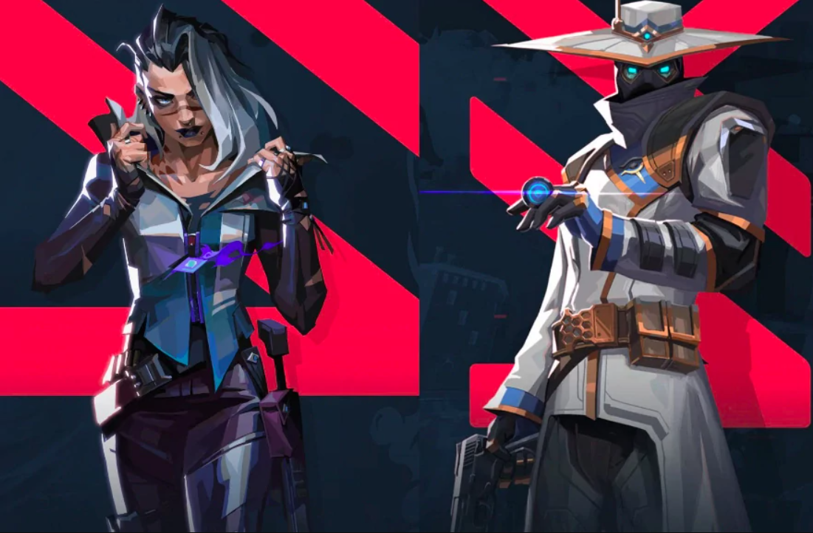
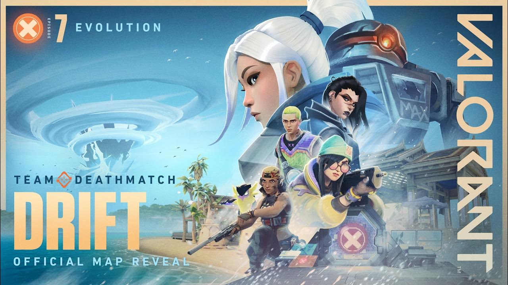

Valorant fue un enorme éxito desde el primer día, un FPS multijugador competitivo que supuso un enorme soplo
de aire fresco para muchos jugadores. Totalmente situado y establecido, al igual que League of Legends, la
gallina de los huevos de oro de la compañía, un título que ha sido capaz de llevar los esports a un escalón
superior a nivel mundial.
¿Valorant para consolas?
Por ahora, Valorant sigue siendo exclusivo de PC, por lo que los entusiastas de las consolas esperan
ansiosos su turno para experimentar su emoción. La pregunta del millón: "¿Cuándo llegará Valorant a
las
consolas?".

Siempre han existido rumores en torno a la llegada de Valorant, el popular FPS de Riot Games, a
consolas,
pero nunca ha habido ningún anuncio o declaración oficial por parte de sus desarrolladores. Ahora,
una
filtración apunta a que esta versión del juego podría ser una realidad muy factible, y es que una
línea
de código que ha compartido el usuario de X (Twitter) @VALORANTLeaksEN, muestra un mensaje que
parece
destinado a un mando. ¿Casualidad? Podría serlo, pero Valorant no tiene compatibilidad con ningún
mando,
por lo que habría dos posibilidades: Riot trabajando en la compatibilidad del juego con gamepads o
que
el juego llegue a consolas.
Valorant forma parte del Xbox Game Pass en PC, por lo que no sería descartable verlo aparecer en
consolas. La línea de código habla sobre un “mando desconectado”, indicando que “reconecta el mando
y
presiona A”. Esto último es un indicio del que mando sobre el que posiblemente están trabajando es
el de
Xbox, pero habrá que esperar para ver si finalmente esta filtración tiene algo que ver con el
posible
futuro del juego en consolas.
Cypher y Fade reciben cambios en el PBE de Valorant

Tanto Fade como Cypher recibirán esos cambios que intentarán cambiar su dinámica actual. Si hablamos
de
la agente turca, su pick rate aumenta hasta el 5.9%, lo que la coloca como la sexta agente más
elegida.
Su porcentaje de victorias es más que aceptable con un 50,9%. Por su parte, Cypher es el tercero
menos
elegido por los jugadores con un mero 2%.
Resta esperar para conocer los cambios. Seguramente en Cypher veamos algo relacionado con su Cable
trampa, una habilidad muy útil para descubrir a nuestros enemigos pero que se revela muy fácilmente.
Otros Centinelas del calibre de Chamber o Killjoy hacen una función mucho mayor. En cuanto a Fade,
esperamos algún nerf a sus habilidades, aunque todavía no tenemos claro cómo se desarrollarán.
El rifle Outlaw, la primera nueva arma en llegar a Valorant
Para los que no lo sepan, desde su introducción Valorant ha contado con un sendo arsenal que contenía
varios tipos de armas, pero desde su lanzamiento hace 3 años y medio no se han incorporado nuevas
opciones a las armas que los distintos agentes pueden utilizar en el juego.

Cómo funciona el rifle Outlaw
Es un rifle que a diferencia de otros no pierde el zoom al disparar pero esa no es su única virtud.
Esta
nueva arma de tipo rifle es capaz de fulminar de un disparo a cualquier agente cuyos puntos de vida
estén por debajo de 140, y está pensado especialmente para contrarrestar a quienes lleven alguna
placa
de armadura encima.
Cuándo se podrá conseguir el rifle Outlaw y cuánto cuesta
La llegada del nuevo rifle está prevista inicialmente para el inicio del Acto 1 del Episodio 8 del
juego,
cuya implementación en el cliente de Valorant está prevista para el 9 de enero. A partir de ese
momento,
y con la nueva versión del juego ya instalada, todos los jugadores deberían poder hacerse con él en
la
tienda de armas por 2.400 créditos.
Valorant presenta su nuevo mapa Drift

El shooter estratégico de Riot Games presenta un nuevo mapa, Drift. Durante la transmisión de la
final de
Game Changers desde Brasil, la desarrolladora ha hecho público el trailer de Drift, que se inspira
en
Tailandia y sus mercados flotantes
La inspiración en Tailandia es clara para los diseñadores que quisieron crear un espacio de largo
alcance
que permitiera disfrutar a los jugadores que se lo disputaran. El mapa, a juicio de Simas- será
ideal
para los duelos de puntería. La cuerda por encima se convierten en un elemento crucial que permite a
los
jugadores cambiar de calle.